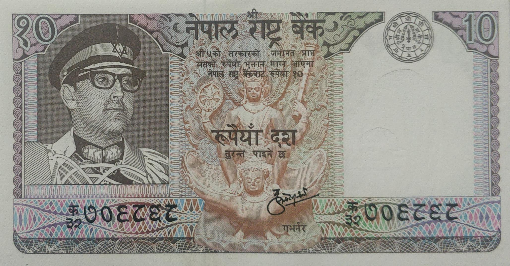
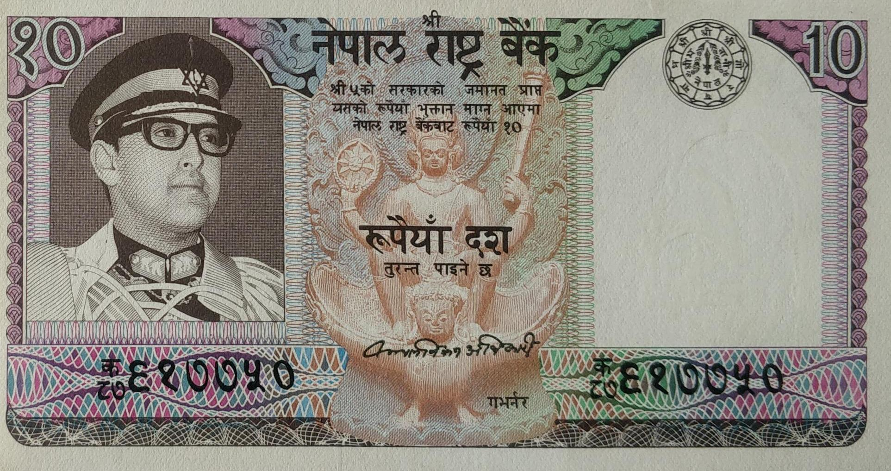
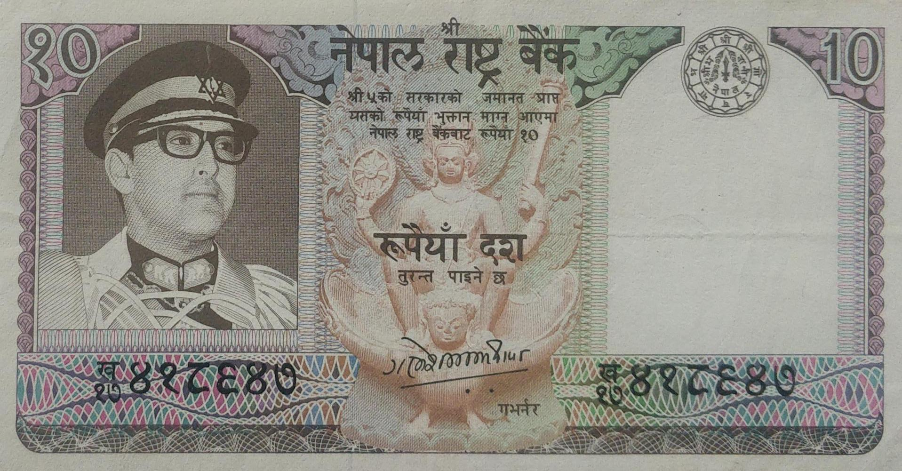
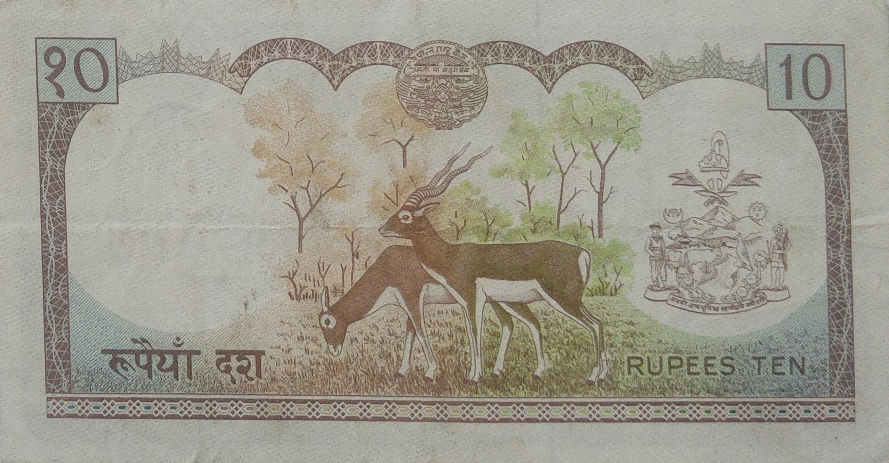
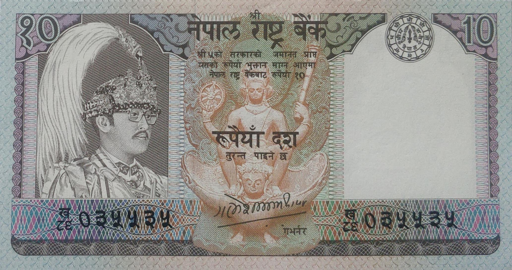
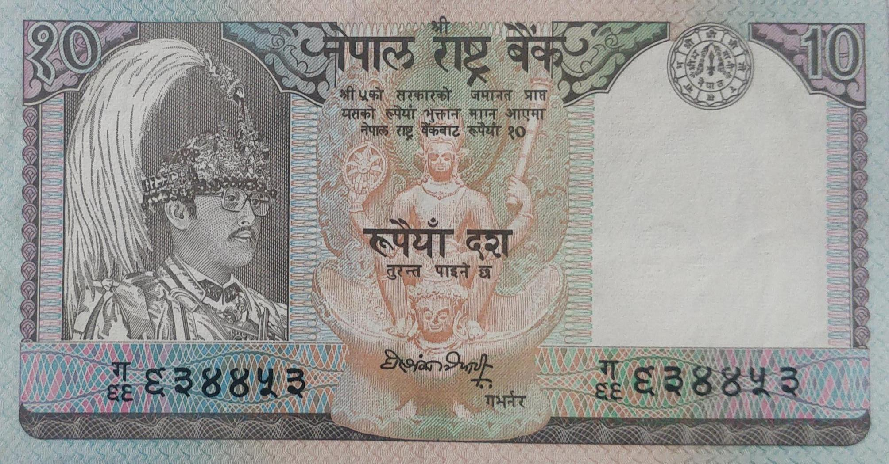
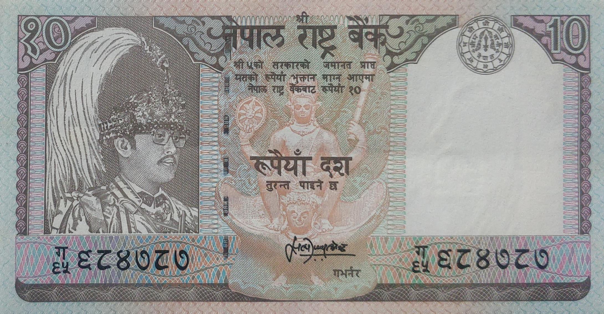
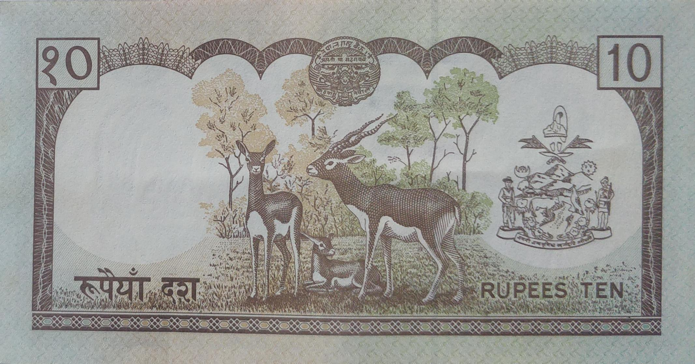
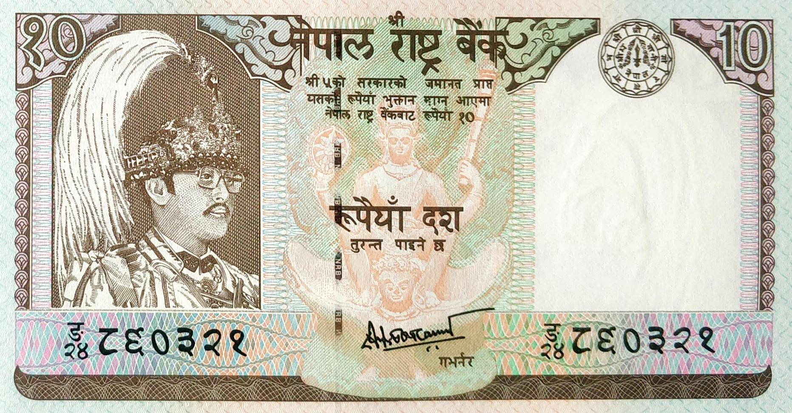
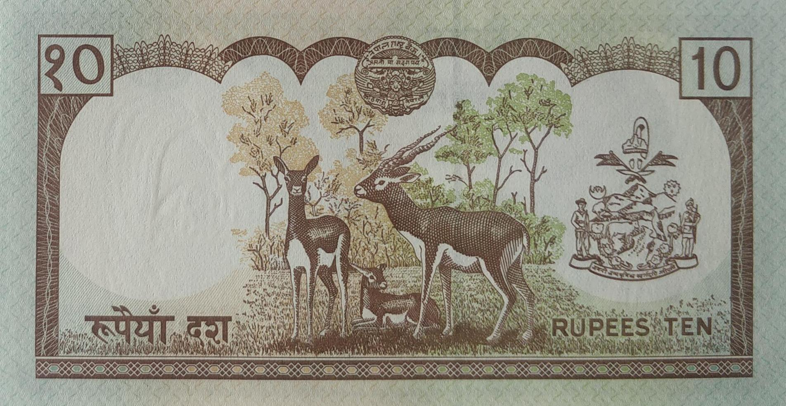

Kul Shekhar Sharma(April 29, 1973 to December 12, 1978)

Kalyana Bikram Adhikari(June 13, 1979 to December 08, 1984)


Ganesh Bahadur Thapa(March 25, 1985 to May 25, 1990)

Ganesh Bahadur Thapa(March 25, 1985 to May 25, 1990)

Hari Shankar Tripathi (August 10, 1990 to Jan 17, 1995)


Satyendra Pyara Shrestha(Jan 18, 1995 to Jan 17, 2000)


Deependra Purush Dhakal(August 29, 2000 to April 27, 2000)
Facts:
- Domination: Rupees 10
- Signature:
6-Kul Shekhar Sharma
7-Kalyana Bikram Adhikari
8-Ganesh Bahadur Thapa
9-Hari Shankar Tripathi
10-Satyendra Pyara Shrestha
11-Dipendra Purush Dhakal
- Printer: Thomas De La Rue & Company, Ltd, UK
- Issued date: Between 1974 to 2001
- Front:
-Portrait of King Birendra & Image of Lord Changunarayan.
- Back:
-A pair of black bucks.
- Watermark: Plumed crown
- Size: 70 X 133 mm